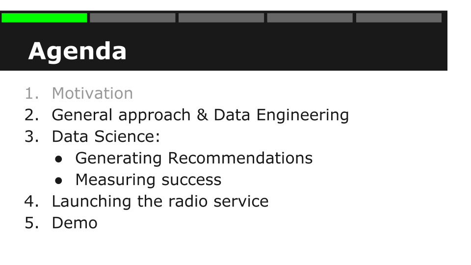
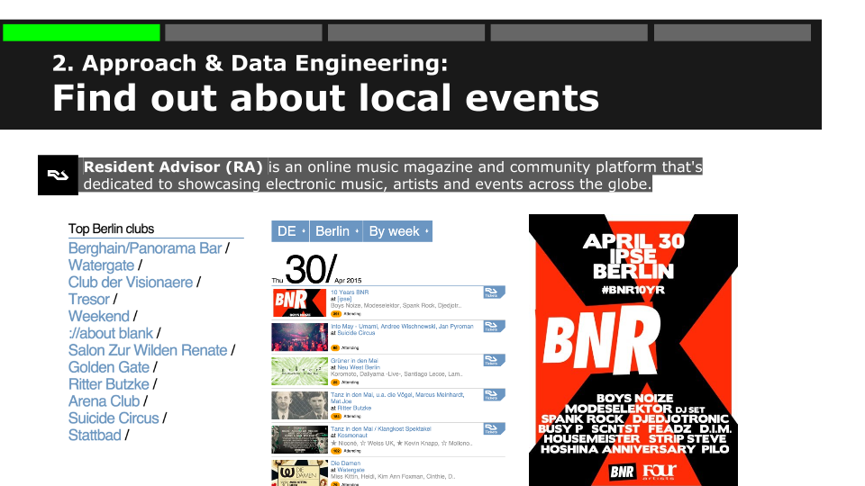
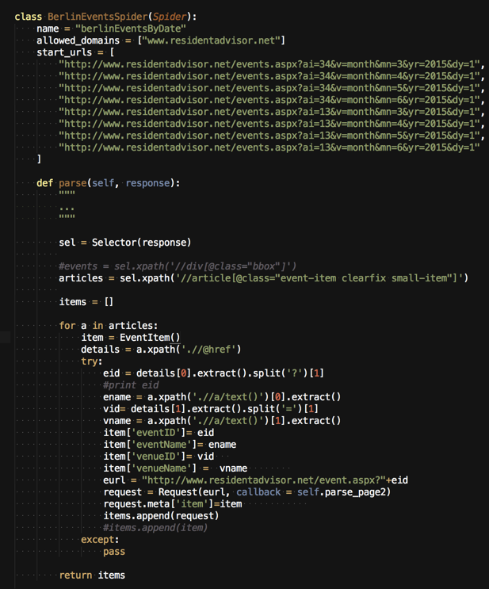
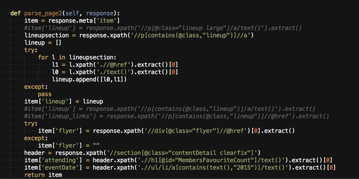
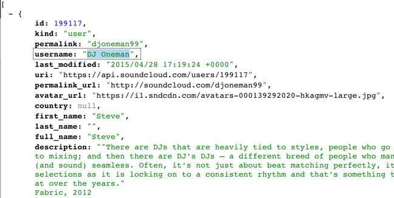
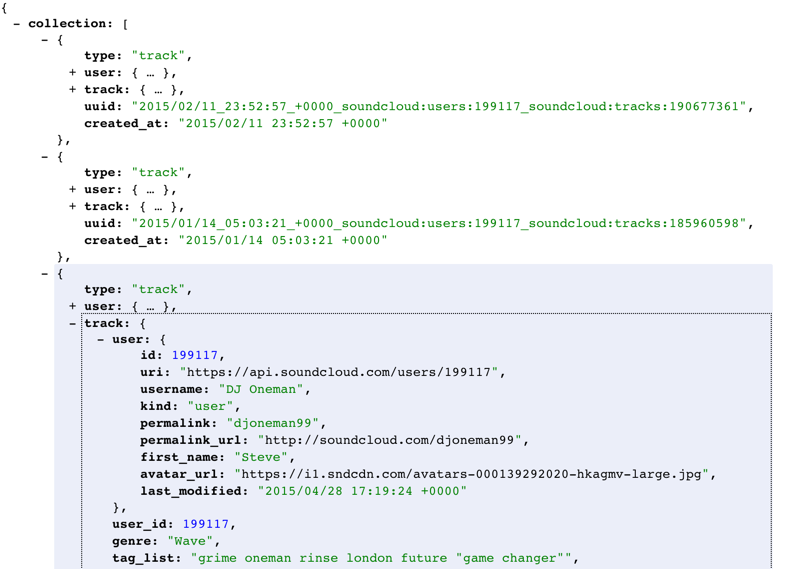
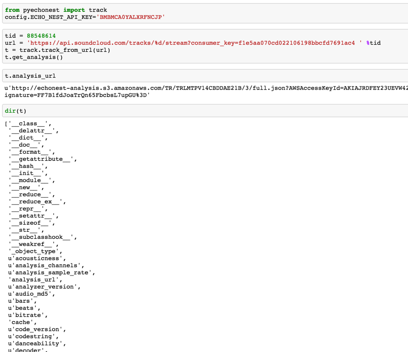

What is DSR
“Data Science Retreat is a data science bootcamp that brings together top data scientists and mentees seeking to grow an exceptionally amount quickly.” (datascienceretreat.com) The curriculum covers a variety of topics that stretch from formulating the analytical problem, getting data, finding insights, making predictions, data at scale to solid implementation practices and software engineering. My two personal favourite gems in the program were big data machine learning with Apache Spark as well as Deep Learning for Image processing using Theano. We did all the modeling in R and Python.
1. Motivation
As a portfolio project I have decided to build a music player similar to Pandora that focusses on electronic music in Berlin. I am using the Soundcloud API to display and play music:
I have structured this blog post into 5 five parts:

First I am describing the general approach, the data gathering & engineering. Then in the main part I will talk about ways to generating music recommendations since playlist generation is essentially a recommendations problem. We will measure success of different approaches and then we’ll play some music.
Download full presentation
2. General approach
The goal is to recommend electronic music that is currently being played in local nightclubs in Berlin. As an authority for music relevance I am using the excellent residentadvisor.net which is an online music magazine dedicated to electronic music. Resident advisor provides rankings of Clubs, DJs and most importantly it features local events.
When looking at it today 30/04/2015 you will see a few mayday events: “Tanz in den Mai” or “Walpurgisnacht” are frequent themes of the evening. More prominently there is a 10 years anniversary of a berlin music label Boysnoize Records founded by the german artist Boysnoize. They feature quite a lineup and I especially like Modeselektor
For my music recommender I am gathering information about events and lineups from residentadvisor.net using scrapy a web scraping python library and then go and search for their music on soundcloud

 
The mapping from DJ-name to soundcloud userid is not trivial. I search for the DJ-name e.g."oneman" via the soundcloud API:
http://api.soundcloud.com/users.json?client_id=f1e5aa070cd022106198bbcfd7691ac4&q=oneman&limit=1

In the next step I measure the the similarity between the username of the response and the DJ-name using the LEVENSHTEIN distance. I only approve the mapping when the strings are sufficiently similar. On top of that I enforce a minimum of legitimate followers i.e. followers from the set of DJs that have officially provided their soundcloud ids on residentadvisor.net. This way I am losing out a few DJs but achieve a high confidence in my recommendations
import soundcloud
client = soundcloud.Client(client_id='f1e5aa070cd022106198bbcfd7691ac4')
[...]
friends = [(follower.id, follower.username) for follower in client.get('/users/%d/followings' % aid, page_size = default, offset=offset)
To fetch tracks for the identified DJ userids i iterate through the user profiles, collections and playlist
https://api-v2.soundcloud.com/profile/soundcloud:users:199117?limit=10&offset=0

For each of the tracks I extract all the users that have liked the track:
fans = [ fan.id for fan in client.get('/tracks/%d/favoriters' % tid, page_size = default, offset=offset)]

3. Data Science
4. Launching the radio service
5. Demo